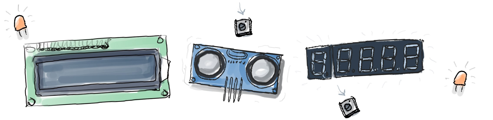

Programme details
Contents
Programme details¶
 Yes we will touch upon technical things such as 3D printing, PCB design, documentation and licensing, coding, etc, but there is more. By the end of this program you should be able to do a first release to the public of your open source project!
Peer to peer learning üèÅ
You will be assigned to a buddy from other project to workout and discuss exercises along the programme. We will also discuss the exercises during the weeks in plenum.
Open source driven learningüëç
When you design for open source you adopt an iterative and progressive approach. You design for contributors, peers and users and enable them to contribute an give feedback.
Hybrid, distributed and flexible modelüïê
Even if you can’t join the 10 weeks programme, it is setup in such a way that you can still join the community chat and use part of the content of the programme, or do the exercises in a different time.
Designed with trainers in mind üìì
Are you an instructor or teacher and have local needs? We know your schedule might not fit ours. But you can reuse the materials and participate in the design of new lessons. Read more
Challenge and project focused ✏️
We provide exercises and lessons created from community members. Each set of exercises are focused on different levels of skills and knowledge areas.
Community centered üåà
We envision that many actors can benefit from this. From established projects looking for new members, to organizations wanting to contribute with open source projects and also educators.
What will happen during the programme
We will help you to work towards a first increment (a publishable and reusable outcome). This can be a first foundational component or prototype for example. We also call this an iteration. This iteration involves several aspects that go from design to documentation.
We show you an approach to designing and developing for open hardware with exercises where designing and testing is at the center.
We share complementary materials and lessons that are open educational resources.
We will host seminars and workshops addressing specific topics related to open source hardware.
We discuss and address the different exercises on a weekly basis in collaboration with other fellows that join the program and learn from each other’s projects.
We will host open discussions on the proposed topics, exercises and materials to exchange views on open hardware
Example projects¶
More complex hardware projects¶
Remixing open hardware projects that can be improved or extended
Circular solar panel
A plastic scanner
A Raspberry Pi microscope
Chair
A robot
Simple hardware projects¶
Contributing to a component or element of a complex hardware project
Origami model
A board game
DIY keyboard
Simple DIY Bed light
Sewing project
Simple woodworking project
Simple IoT projects
Looking for more inspiration?
Here are some ideas üòÉ
There are interesting projects in Hackaday. Many of these projects are amazing and advanced hacks, and they might benefit from turning them into a more robust/reproducible open hardware design. Instead of starting from scratch you could partner up and contribute to existing projects.
What if you make scientific equipment or scientific setup open source? What if you take existing open harwdare equipment that you like and improve it? Read more about it
What if old phones could be reused as computers for hardware projects and their lifes could be extended?
What if interesting hacks could be turned into a reproducible piece of hardware? Read more about it
Excited?
Read the participation criteria
If it is not clear enough and you have other questions contact us Or leave us a comment bellow at the end of the page